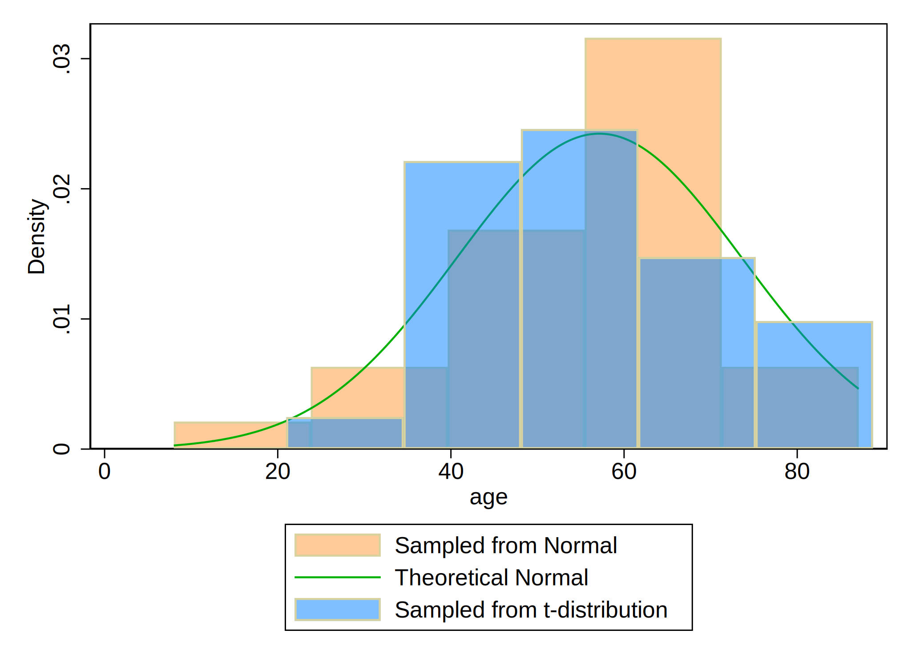

Home Work 4 for Stata II (Intermediate) Class
1.Background:
This homework was created in order to help the students practise creating html file (website) that includes background; method with some codes; results with some graphs and mathematical notations; and conclusion.
For enhancing the aesthetics of my .html file , I uploaded different files in the github work repository as:
This is my stmarkdown.css file
This is my header.txt file
2.Methods:
First, a variable “age” was created, once with a normal distribution of ages, and second with the t-distribition of ages, using a simulated data. Then, in a single figure (overlay histogram), those distributions were plotted together to show how different the distributions look visually.
Codes for generating simulated data, creating variables and making graphs
. **Clear all
. cls
. clear all
.
. ** Set working Directory
. * See present working directory
. pwd
.
. * Specify to use the present working directory, and specify separately for Window
> s and Mac
. if c(os)=="Windows" { //method for window
. else { // method for mac
.
. **Data Simulation:Initialize your dataset with 30 observations
. set seed 521774
. set obs 30
.
. **Variable Generation
. *Create an age variable with a mean of 57 years and a standard deviation of 15.
. *Use the command (to simulate a normal distribution)
. capture drop age
. gen age = (rnormal() * 15) + 57
.
. *Alternatively, simulate a t-distribution.
. capture drop age_t
. gen age_t=(rt(_N)*15)+57
.
. ** Graphical Representation
. *Plot a histogram of the age variables from both rnormal() and rt(), and overlay
> it with a theoretical normal distribution curve.
. *This visualization will help in understanding the distribution of age among the
> observations.
.
. hist age, ///
> fcolor(orange%40) /// simulated normal
> addplot(hist age_t, fcolor(midblue%50)) /// agged the curve for simulated t-distri
> bution
> normal /// theoretical normal, that is showing the normal distribution
> legend(on ///
> lab(1 "Sampled from Normal") ///
> lab(2 "Theoretical Normal") ///
> lab(3 "Sampled from t-distribution") ///
> )
.
. *Export Graph
. graph export histogram.png, replace
.
3.Results:
. quietly
. {
The results in this analysis are based on simulated data. There are 30 number of observations and 2 variables in the simulated dataset.
Figure 1:Graph showing different distribution of ages

$\text{Age(years) in Normal Distribution} \sim \mathcal{N}(\mu=57.14364,,\sigma=16.45974)$ $\text{Age(years) in T-distribution} \sim \mathcal{t}(\mu=56.533884,,\sigma=15.009746)$
4.Conclusion: The histogram clearly shows that though the two distributions had similar mean and SD of age, they have different shapes and tail behaviour. While the normal distribution yields a bell-shaped curve, the t-distribution exhibits slightly heavier tail, which indicates that there is a greater likelihood of extreme age values. It shows the importance of understanding the shape of distribution of variables before implementing further statistical analysis.